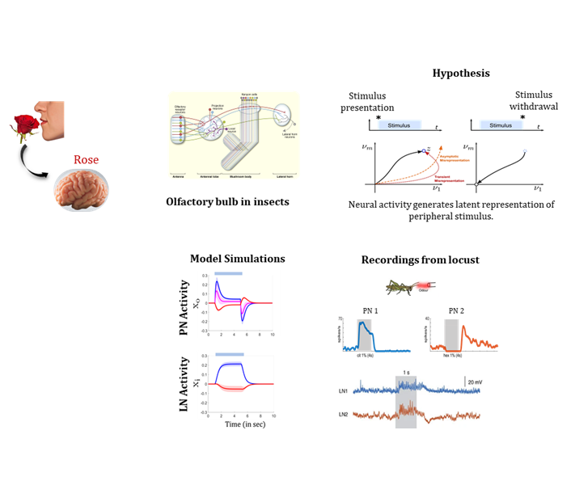
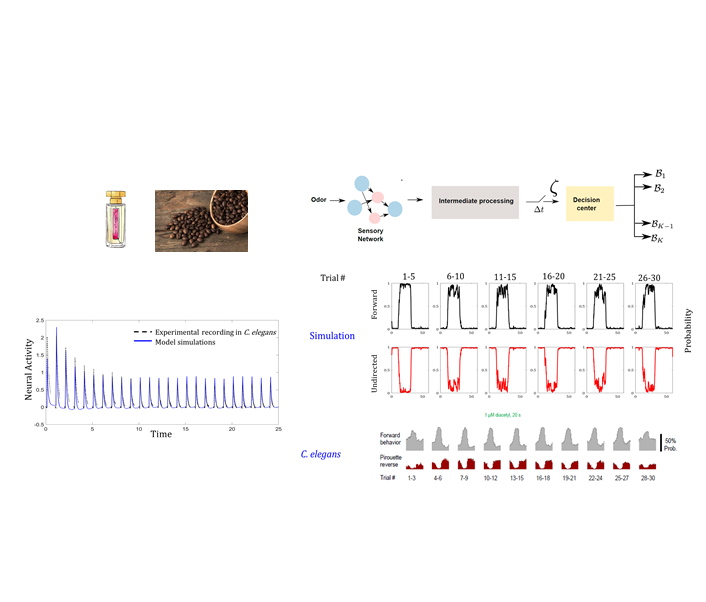
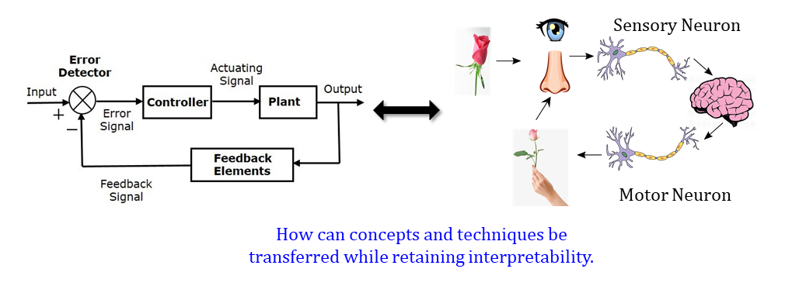

Our perception of smell is difficult to characterize. Olfactory stimuli mostly arrive in the form of invisible molecules suspended in a fluid medium. As humans we rely on multimodal sensory information for stimulus detection. For instance, we identify immediately the smell of an orange if we can see it. If blindfolded? Not so easily! However, organisms with less evolved cognitive abilities such as the fruit fly can navigate in their environment reliably based primarily on the sense of smell.
My primary research question was, can we characterize this act of smelling mathematically? Given that we successfully build a computational model of olfaction, will it be predictive of neural architectures known to exist in organisms? Finally, can these models depict properties that are often associated with olfaction, but are not an integral part of the modeling efforts?
To answer these questions, I began with a hypothesis that sensory networks in fact project complex high-dimensional stimulus onto a lower dimensional space in an energy efficient manner. Using this abstracted hypothesis, through formal optimization techniques, I developed a model that generates activity patterns previously noted in experimental studies of the insect olfactory system. Furthermore, the model predicted mechanisms behind several complex computations in the brain.
Concepts: Computional Neuroscience, Control Theory, Optimization
Tools: MATLAB, Python

Did you ever venture into perfume shopping and midway through the process found yourself unable to identify any odor? Have you relied on a pot of coffee beans to give you a better judgement of a set of fragrance? This temporary desensitization to odors is considered to be a phenomenon known as habituation . What happens here is, after repeatedly encountering the same odor several times, the neural activity adapts to a lower magnitude response.
In my research, I was curious to understand how these neural traits can be realized through a mathematical model and how such exponentially decreasing neural activity impacts behavior. Around the same time, my collaborators at Worcester Polytechnic Institute around the same time made an interesting observation. They found that in C. elegans , while neural activity adapted to strikingly low levels, behavior remained quite robust. In fact for some stimulus concentrations and repeat frequencies, behavior remains invariant for a few hours.
Motivated by these observations, I developed a generative model of neural adaptation expanding on the previous model of olfactory detection. It turns out that information when processed over several timescales, generates short term memory effects, which modulates sensory neural activity. I used this model in conjuction with a probabilistic behavioral model that predicted behavior under changing environmental information. It turns out that behavior is a product of non-linear transformation over accrued sensory information. We are currently consolidating our findings in a manuscript for publication.
Concepts: Computional Neuroscience, Control Theory, Optimization, Machine Learning
Tools: MATLAB

Engineers and mathematicians have developed a variety of numerical solution strategies where the agent learns based on its experience of interacting with the environment. What remains elusive is the insight about how neurons enact these strategies. At a high-level each task is composed of two critically interlinked sub-parts: (a) learning what the task is, and (b) performing the task itself. In this project, we aim to investigate how representative neural units might implement task-oriented learning through synaptic interactions.
Concepts: Computational Neuroscience, Reinforcement Learning, Optimization
Tools: Python